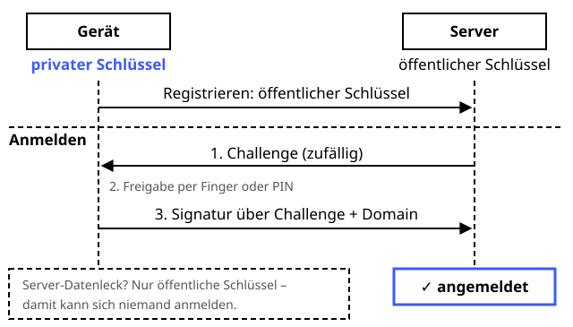

Passkeys (FIDO2)
Schutzziele: Authentizität
Anmelden ohne Passwort – das Geheimnis verlässt nie die Küche.
Definition
Passkeys (Standard FIDO2 / WebAuthn) ersetzen das Passwort durch ein eigenes Schlüsselpaar für jede Webseite. Der private Schlüssel bleibt im Gerät – Handy, Laptop oder Sicherheitsschlüssel – und wird per Fingerabdruck, Gesicht oder PIN freigegeben. Beim Login signiert das Gerät eine zufällige Challenge des Servers. Der Server speichert nur den öffentlichen Schlüssel. Weil die Signatur an die Domain gebunden ist, laufen Phishing-Seiten ins Leere.
Zutaten
- Ein Schlüsselpaar pro Webseite (meist ECDSA mit P-256)
- Eine zufällige Challenge
- Digitale Signatur
- Der Domainname der Webseite
- Freigabe per Fingerabdruck, Gesicht oder PIN
Zubereitung
- Registrierung: Das Gerät erzeugt ein neues Schlüsselpaar nur für diese Domain.
- Der öffentliche Schlüssel geht an den Server, der private bleibt im Gerät.
- Login: Der Server schickt eine zufällige Challenge.
- Der Nutzer gibt per Fingerabdruck oder PIN frei.
- Das Gerät signiert die Challenge zusammen mit dem Domainnamen, den es gerade sieht.
- Der Server prüft die Signatur mit dem gespeicherten öffentlichen Schlüssel – passt sie, ist man angemeldet.
Skizze

Der private Schlüssel (blau) verlässt nie das Gerät. Der Server prüft nur mit dem öffentlichen Schlüssel.
Skizze erstellt von Claude (KI)
Demo
Tipps
- Ein Datenleck beim Server verrät nur öffentliche Schlüssel – damit kann sich niemand anmelden.
- Phishing-sicher: Die Signatur enthält die Domain. Was auf einer gefälschten Seite signiert wird, passt nicht zur echten.
- Der Fingerabdruck verlässt nie das Gerät, er schaltet nur den privaten Schlüssel frei.
- Passkeys werden oft über das Konto von Apple, Google oder einen Passwortmanager synchronisiert – trotzdem ein zweites Gerät als Backup einrichten.
- Im Browser programmiert man das mit der WebAuthn-API:
navigator.credentials.create()undnavigator.credentials.get().